AnyPortrait > Manual > Creating a URP Outline Shader
Creating a URP Outline Shader
1.3.5
By using AnyPortrait's Material Library function, you can apply various shaders.
It also supports other rendering pipelines, such as Unity's Universal Render Pipeline (URP), so you can try a variety of techniques.
This page describes the process of implementing the technique of drawing the outline of a character in a URP environment at the request of the user.
You can see how we implemented this technique considering the characteristics of URP and the system where multiple meshes with "Transparent material" like AnyPortrait are rendered.
We hope that this description will help you implement various other techniques, including outlines.
Before reading this page, we recommend that you read the following pages first.
- Material Library
- Universal Render Pipeline
- Creating Materials with Shader Graph
Approaches to Implementing Outline

There are many different ways to implement an outline shader, but here's a simple way to compare transparency.
If a rendered pixel satisfies the following conditions, it can be considered as an "outline".
- The pixel color being rendered should be transparent.
- There should be a non-transparent pixel among the other pixels around it.
As above, when sampling the color of the texture, you can easily find the part where the outline should be drawn by sampling the surrounding transparency.
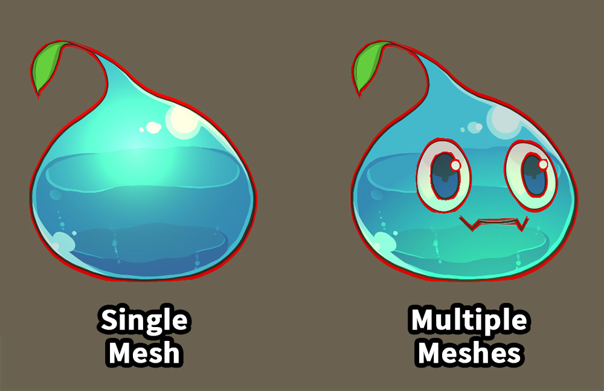
If you apply this technique directly as a shader, you will run into the above problem.
On the left is the outline of a single mesh, mainly in "Sprite Renderer".
You can see that the outline is drawn normally.
But in the case on the right, i.e. applying that shader to a character created with AnyPortrait, you can see strange results.
An outline is also created for each mesh inside.
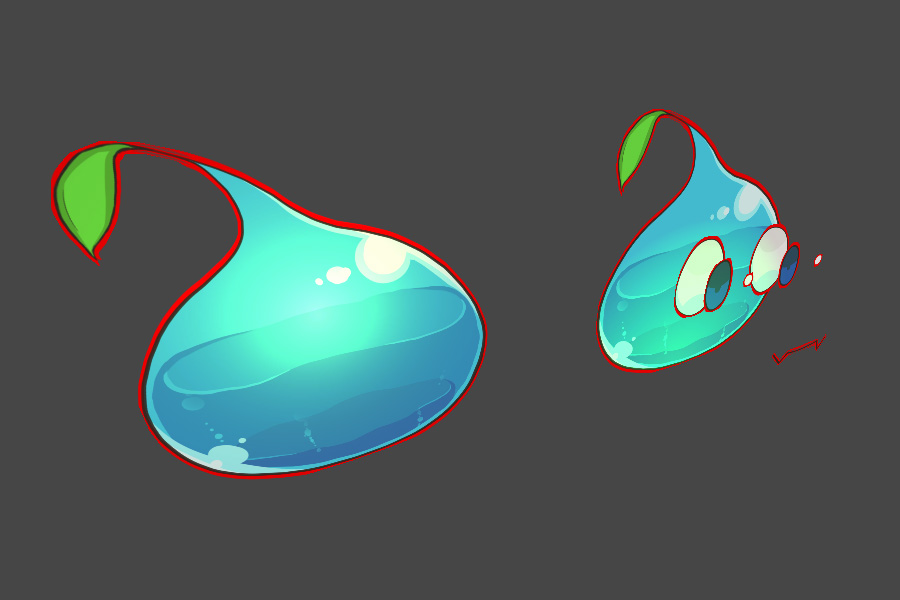
If a character has multiple meshes, such as AnyPortrait, it is not possible to simply extract the outline with a single shader.
This can happen to any other 2D asset, or a 3D character with multiple meshes.

So, the simplest way to solve this problem is to render with the same character placed slightly behind it.
This method is the most intuitive and is commonly used in both 2D and 3D, unless you use Post Processing.
The following methods can be considered to implement this approach.
1. How to duplicate the character and place it behind or make it render first, then move it the same as the original
2. How to make a character render twice using "Multi-Pass Rendering"
Of course, the method in 1 is probably the most convenient method.
If you want to implement this way, AnyPortrait's Synchronization feature will be helpful.
In this page, we will implement the approach in 2.
Since it doesn't duplicate the character, it doesn't consume CPU resources, and it's probably the best choice as it prevents problems caused by out-of-sync movements.
Unfortunately, SRP, such as URP, does not natively support multi-pass rendering, unlike the default rendering pipeline.
So, in the URP environment, we will use "Stencil" and "LightMode" to reproduce multi-pass.
Note 1
In our tests, we found that "Stencil" did not work on older Android devices.
Except some devices, we think the stencil will work on most current devices.
Note 2
The examples on this page are based on the 12.1.1 version of the URP.
Depending on the version of URP, code or functionality may not be compatible.
Creating the Outline shader based the shader graph

Above is an example scene configured for illustrative purposes.
Four characters with URP 2D Lit material applied are placed.
Let's replace the shader of the applied material to make it an outline shader.
You can download and use the completed shaders and materials directly from the link below.
The provided files may not be compatible if the URP version is not 12.1.1 or Unity 2021 version.
< Download the outline shader and material package >

After downloading the package and importing it into the project, the files are added as above.
(1) This is the shader graph that draws the outline and the material. Just set "Outline Material" as the material of the pass drawing the outline in Renderer Data.
(2) These are the shader assets for the stencil to be set on the AnyPortrait character. It was categorized with URP 2D Lit, URP Unlit, and Gamma Space and Linear Space respectively.
If you use the above files, you can omit the content of creating shaders in the description on this page.

Select a character and open the Material Library.
(1) Select the currently applied material preset for URP.
(2) We will replace the shader item that need to be changed.

The target shader item is:
- If the project environment is Gamma Color Space:
Modify and replace the shader graph in Gamma > Basic Rendering > Alpha Blend.
- If the project environment is Linear Color Space:
Modify and replace the shader graph in Linear > Basic Rendering > Alpha Blend.
Materials other than "Alpha Blend" have no outlines, so you don't need to change them.
For the same reason, the Clipped shader doesn't need to be changed either.

Copy the target Shader Graph asset and paste it to another path.
This Shader Graph asset will be used solely for code generation purposes.

Open the copied Shader Graph asset.
(1) Click the + button to add a Float type property.

(2) Set the name of the added property to "LineThickness". (In the shader code, it is defined as "_LineThickness".)
(3) Save the Shader Graph.

(1) Select the Shader Graph asset again.
(2) Click the "View Generated Shader" button in the Inspector.
If the code has already been generated, click the Regenerate button and then click the View Generated Shader button.

The script editor will open, and you can see the shader code generated from the shader graph.
We will use this code to write a new shader.
(1) Press Ctrl + A to select all shader codes.
(2) Press Ctrl + C to copy all selected codes.

Create a new shader asset to paste the copied shader code into.
Create a new shader asset by right-clicking on the appropriate path and selecting "Create > Shader > Unlit Shader".
This asset must be a regular Shader Asset, not a Shader Graph.
Why duplicate code from Shader Graph?
Shaders for URP are so complex that it is almost impossible to write them yourself.
Also, since the code changes depending on the version, Shader Graph is basically used.
However, in Shader Graph it is not possible to add Passes or specify "Light Mode".
Therefore, although it is a bit cumbersome, it is necessary to complete the shader graph first, then duplicate the generated code and modify it.
If the Shader Graph could be improved and the various techniques described here could be applied, there would be no need to generate code.

Open the created Shader asset.
You can see the simple shader code in unlit way.
Instead of using this code, try pasting and editing the "code copied from the Shader Graph" currently saved in the clipboard here.
(1) Press Ctrl + A to select all codes.
(2) Press Ctrl + V to paste the saved code in the clipboard.
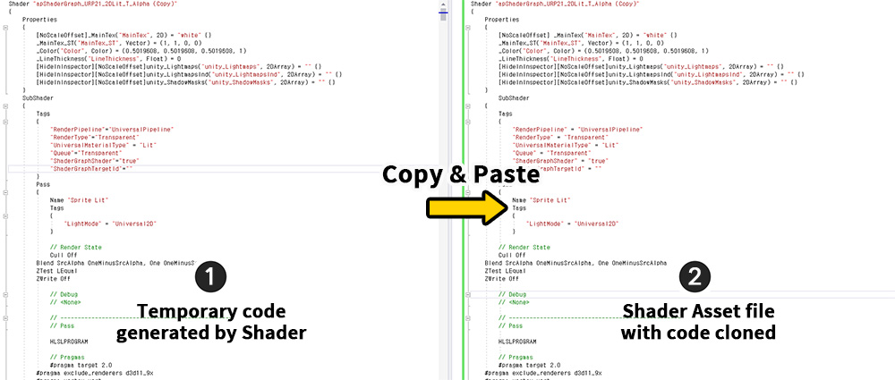
(1) Temporary code generated from Shader Graph is pasted into (2) the Shader asset.
Of course, the two codes are exactly the same.
Now let's edit the Shader asset.
(From now on, Shader Graph and code generated from Shader Graph will not be used.)

(1) Edit the shader name.
(2) Add it by writing the code below within the syntax of "SubShader".
Just add it to the location pointed to in the image above.
Pass
{
// A Pass that sets values to the Stencil.
// We won't write any stencil code here, as we'll be specifying the stencil as a material override setting in the Renderer Data.
// Multi-pass is implemented using the name of Light Mode.
// Remember the name "SetStencilPass".
Tags { "LightMode" = "SetStencilPass" }
Blend SrcAlpha OneMinusSrcAlpha
// If the ColorMask is set to A, no rendering will occur even if the stencil is set.
ZWrite Off
ColorMask A
HLSLPROGRAM
#pragma vertex vert
#pragma fragment frag
#include "Packages/com.unity.render-pipelines.universal/ShaderLibrary/Core.hlsl"
struct Attributes
{
float4 positionOS : POSITION;
float2 uv : TEXCOORD0;
};
struct Varyings
{
float4 positionHCS : SV_POSITION;
float2 uv : TEXCOORD0;
};
TEXTURE2D(_MainTex);
SAMPLER(sampler_MainTex);
// Write shader properties here.
// To execute "SRP Batcher" for rendering optimization, the following "CBUFFER" syntax must be written the same as other passes.
CBUFFER_START(UnityPerMaterial)
float4 _MainTex_TexelSize;
float4 _MainTex_ST;
float4 _Color;
float _LineThickness;
CBUFFER_END
Varyings vert(Attributes IN)
{
Varyings OUT;
OUT.positionHCS = TransformObjectToHClip(IN.positionOS.xyz);
OUT.uv = TRANSFORM_TEX(IN.uv, _MainTex);
return OUT;
}
half4 frag(Varyings IN) : SV_Target
{
// Check the transparency of pixels located at a distance of "_LineThickness".
float offset1 = _LineThickness;
float offset2 = _LineThickness * 0.7f;
float alpha_0 = SAMPLE_TEXTURE2D(_MainTex, sampler_MainTex, IN.uv).a;
// Check the transparency of the surrounding 8 pixels.
float alpha_1 = SAMPLE_TEXTURE2D(_MainTex, sampler_MainTex, IN.uv + float2(offset1, 0)).a;
float alpha_2 = SAMPLE_TEXTURE2D(_MainTex, sampler_MainTex, IN.uv + float2(-offset1, 0)).a;
float alpha_3 = SAMPLE_TEXTURE2D(_MainTex, sampler_MainTex, IN.uv + float2(0, offset1)).a;
float alpha_4 = SAMPLE_TEXTURE2D(_MainTex, sampler_MainTex, IN.uv + float2(0, -offset1)).a;
float alpha_5 = SAMPLE_TEXTURE2D(_MainTex, sampler_MainTex, IN.uv + float2(offset2, offset2)).a;
float alpha_6 = SAMPLE_TEXTURE2D(_MainTex, sampler_MainTex, IN.uv + float2(-offset2, offset2)).a;
float alpha_7 = SAMPLE_TEXTURE2D(_MainTex, sampler_MainTex, IN.uv + float2(-offset2, -offset2)).a;
float alpha_8 = SAMPLE_TEXTURE2D(_MainTex, sampler_MainTex, IN.uv + float2(offset2, -offset2)).a;
half totalAlpha = alpha_0 + alpha_1 + alpha_2 + alpha_3 + alpha_4 + alpha_5 + alpha_6 + alpha_7 + alpha_8;
float4 c = float4(0, 0, 0, 0);
c.a = saturate(totalAlpha * _Color.a);
// Using the point that the stencil is not updated when "discard" is called, only the outline part makes the stencil value to be set.
// When a pixel is opaque, it corresponds to the inside of the image, not the outline.
if (alpha_0 > 0.5f)
{
discard;
}
// If there are no opaque pixels around it, it's a margin, not an outline.
if (c.a < 0.02f)
{
discard;
}
return c;
}
ENDHLSL
}
Please refer to each comment for a detailed explanation of the code.
If you add the above code inside your shader code, it will look like the image below.

Of particular note here are the "Light Mode" and CBUFFER syntax.
(1) URP distinguishes the rendered Pass using "Light Mode".
Use this attribute to make this Pass run first, setting values in the stencil before the character is rendered.
Let's memorize "SetStencilPass", which is the name of the Light Mode we created here.
(2) In order to improve rendering performance, SRP including URP renders as many objects as possible with fewer draw calls if the material properties are similar.
This attribute is called "SRP Batcher".
In order for SRP Batcher to work, all property syntax within the shader code, that is, the code within "CBUFFER_START ~ CUBFFER_END" must be the same.

(1) Select the completed shader asset.
(2) If you wrote it without any problems, you can see that the SRP Batcher property is "compatible".
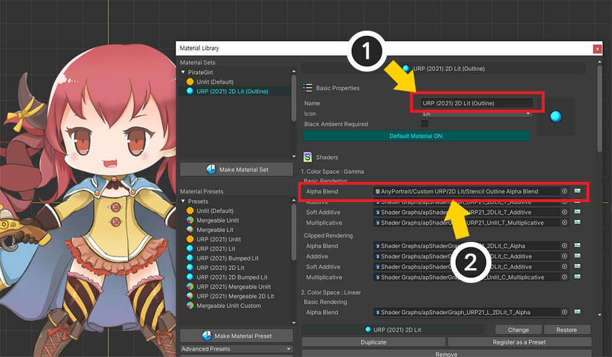
Let's open the character and apply this shader.
(1) Open the Material Library and rename this Material Set.
Changing the name is to save this Material Set as a Preset so that it can be easily applied to other characters.
(2) Apply the Shader asset created earlier in the "Alpha Blend" item.
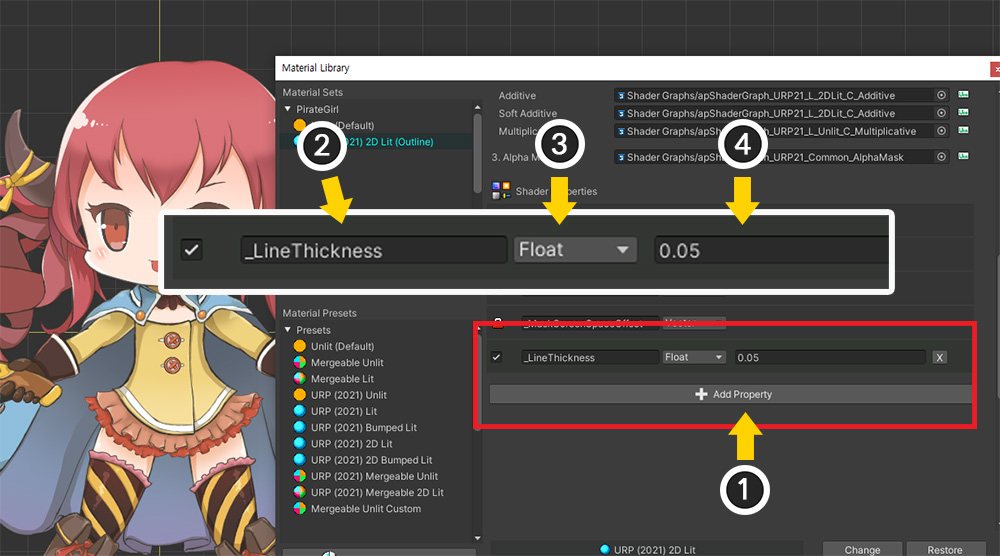
Let's specify "_LineThickness", the property added in the previous process.
(1) Click the "Add Property" button.
(2) Set the name to "_LineThickness".
(3) Set the type to "Float".
(4) Since the thickness of the outline is based on UV, the texture coordinate system, enter a very small value of 1 or less.
Since we don't know the proper value yet, we enter a reasonably small value.

If you want to apply this set, you can make it a preset, so you can quickly set it up for other characters as well.
(1) Press the "Register as a Preset" button.
(2) You can see what has been added as a Preset.
As of AnyPortrait v1.3.5, there is a bug where the change history is not reflected if you save it as a preset immediately after changing the shader asset.
Before saving as a preset, please turn off and on the material library.
This bug will be fixed in the next update.
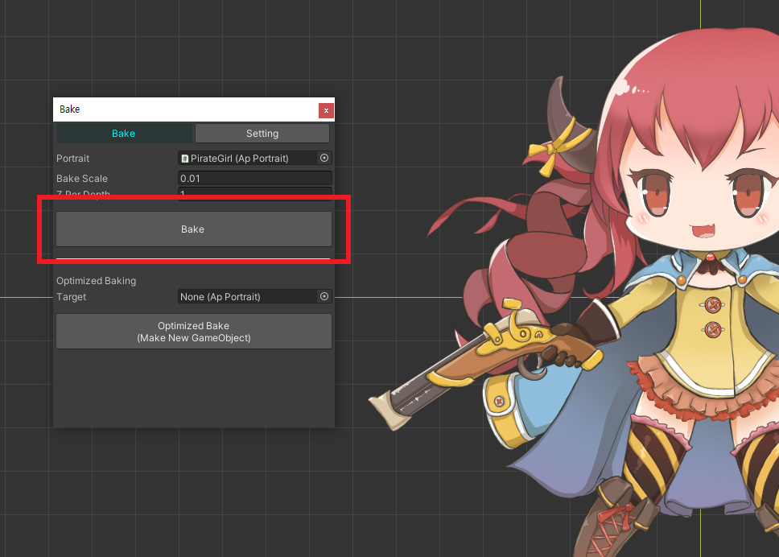
Execute Bake.

You have to do the same for the other characters, but you can reduce the cumbersome process by using the saved Preset.
Open another character and launch the Material Library.
(1) Click the "Make Material Set" button to add a new Material Set.
(2) Select the preset for outline rendering created in the above process.
(3) Press the Select button.
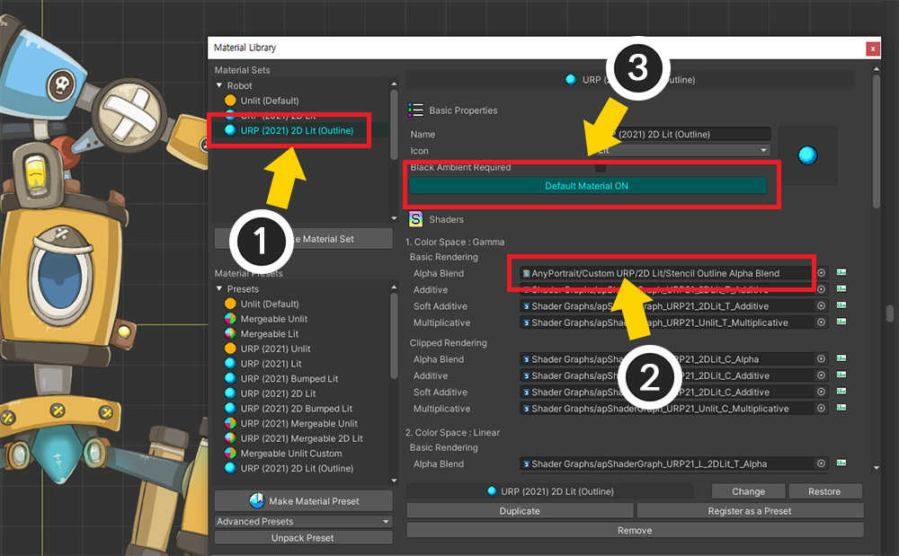
(1) Select the added Material Set.
(2) Press the "Default Material" button to set it to ON.
(3) Check whether the shader asset created is applied.

Do this the same for all characters.
Creating an Outline Shader and Setting the Renderer
The next task is to make it actually an outline rendering by recognizing the stencil values.
It goes through some pretty complicated steps, so please follow them one by one.

Add a layer to differentiate what the outline will be drawn on.
(1) Select "Project Settings > Tags and Layers".
(2) Add a new layer to "Layers".
We added a layer named "OutlineCharacter".

(1) Select all characters.
(2) Change the layers of the characters to the "OutlineCharacter" you just set.
(Change the layers of child objects in batches as well.)

The shader created in the previous process is saved in the stencil where it will be the outline.
We haven't created any shaders and materials that render the outlines yet.
Let's create a shader that renders the outline.
Create a new shader graph by right-clicking on the "Projects" tab and selecting "Create > Shader Graph > URP > Unlit Shader Graph".
Why use the "Unlit" shader rather than the "Sprite Unlit" shader?
In 2D games, the Sprite Unlit shader supports transparent rendering and the Unlit shader only supports opaque rendering, so it is common to use the Sprite Unlit shader.
However, there is a problem in that it cannot control the rendering order of the outline because the pass that draws the outline in URP operates collectively rather than for each object.
In Opaque shader, the rendering order is determined by comparing the Z position even if the rendering passes are different, whereas Transparent shader cannot control the rendering order because the Z position cannot be used.
As a result, if you batch render the outline as a Transparent shader, it will always be rendered only behind or in front of all objects.
So to use the Z position, we had to use the Unlit shader even if the rendering quality was rather poor.
In order to use the Sprite Unlit shader, either SRP supports multi-pass for each object or AnyPortrait needs to add a multi-material function for this, and we are reviewing this through user feedback.

(1) Open the created shader graph.

(1) Add a "Color" property named "OutlineColor" and a "Float" property named "ZBias".
The OutlineColor property refers to the color of the outline, and ZBias makes the outline to be rendered slightly behind the character.

Write the shader graph as above.
Note that it shifts the rendering position backwards by ZBias relative to the World coordinate system.
(Open in a new tab to view the original size image.)

Let's create an Outline Material to be used in "Outline Rendering Pass".
(1) Create a new Material and select it.
(2) Change the shader of the material to the outline shader created just before.
(3) Set "OutlineColor" and ZBias. We set "ZBias" to "1".

The next step is to modify the renderer data of the URP.
(1) Select "Universal Render Pipeline Asset" applied to the project.
(2) You can see the currently applied "Renderer Data" in the Renderer List.
Let's edit this "Renderer Data" to add a special rendering pass.

(1) Select the currently applied "Renderer Data".
(2) Click the "Add Renderer Feature" button.
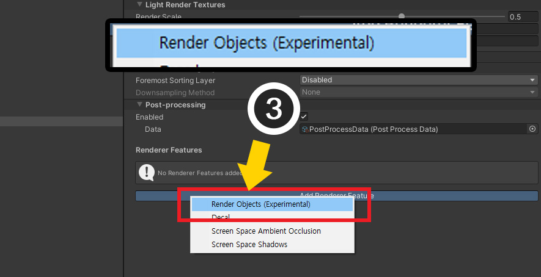
(3) Select "Render Objects" to add them.
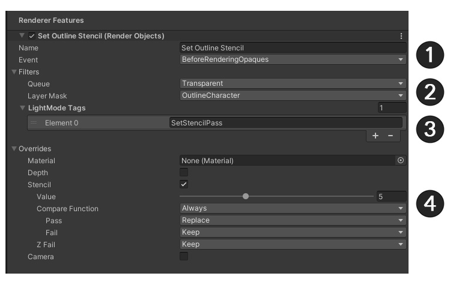
Let's give the added Render Objects a role of "Setting the stencil in the area corresponding to the outline".
Set as above.
(1) After setting the name appropriately, set Event to BeforeRenderingOpaques.
This is to set the stencil in the outline area before the opaque meshes are drawn.
Please note that most of the event names are similar and can be easily confused.
(2) Set Queue to Transparent, and change the value of Layer Mask to “OutlineCharacter” previously set.
This render event will now work for AnyPortrait characters.
(3) Press the + button in LightMode Tags and enter "SetStencilPass".
"SetStencilPass", which appeared in the code of the shader I wrote above, is what is used here.
(4) To set the stencil in the outline area, open the Overrides item and set as follows.
- Activate Stencil.
- Set Value to a non-zero value. We set it to "5", and the Stencil property below should do the same.
- Set Compare Function to Always.
- Set Pass to Replace.
The value "5" will now be written to the stencil where the outline will be drawn.

In the same way, click the "Add Render Feature" button and add another Render Object.
This render event is responsible for "drawing an outline by recognizing the stencil".
(1) After setting the name appropriately, set Event to AfterRenderingOpaques.
We want to draw an outline after the other opaque meshes have been drawn.
(2) Set Queue to Transparent and set the value of Layer Mask to “OutlineCharacter” to prepare for recognizing the stencil.
(3) Open Overrides and set the "Outline Material" created before Material here.
Now when this rendering pass works, the outline material will be used instead of the character's material.
(4) Enable Depth, Write Depth and set Depth Test to the default value of Less Equal.
Depth Test determines whether the outline is obscured by other objects on a pixel-by-pixel basis.
(5) Recognizes the stencil value created in the rendering event that operates first, and sets it to render only that part.
- Activate Stencil.
- Set Value to the same value as previously set (here, "5").
- Set Compare Function to Equal.
- Set Pass, Fail to Keep.

If all settings are complete, you will see the above result.
It's a bit rough, but the outline will be visible.
Correcting outline thickness
The outline is rendered, but it is too rough.
Let's correct the result by changing the thickness of the outline or the shape of the mesh.

Select a character to open the Material Library.
(1) Adjust the value of "_LineThickness" to properly adjust the thickness of the outline.
Since this value is based on the UV coordinate system, the appropriate range of values varies depending on the size of the texture.
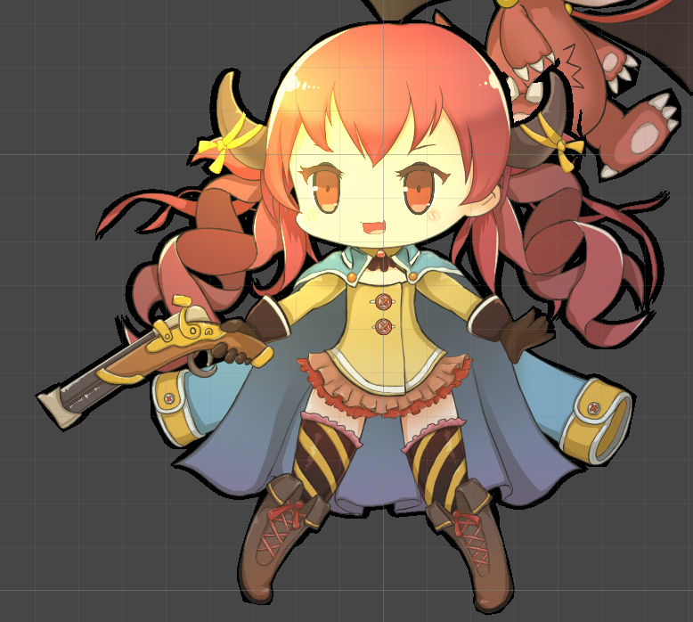
By modifying the thickness of the outline, a pretty result was obtained.

If your mesh has very small margins, you may not have room to draw the outline as shown above.
In this case, you need to modify the mesh.
(If possible, it is recommended to edit the animation before creating it.)
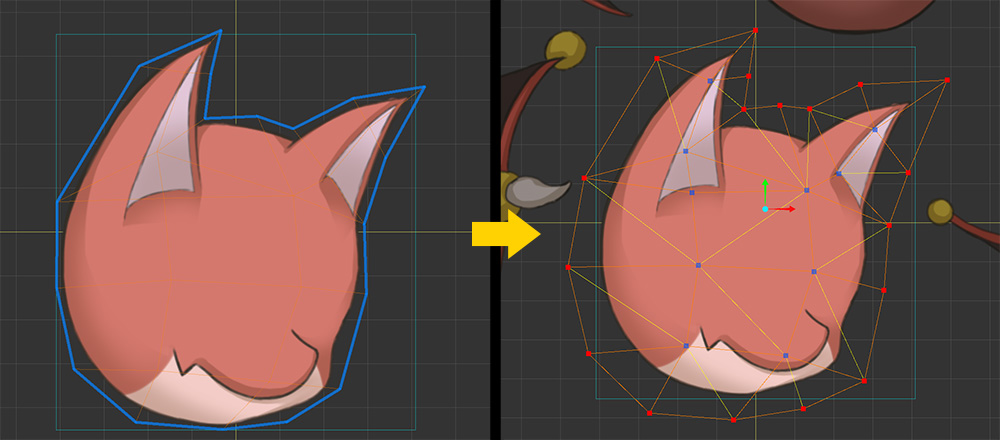
Modify the mesh so that the outline can be drawn as above.
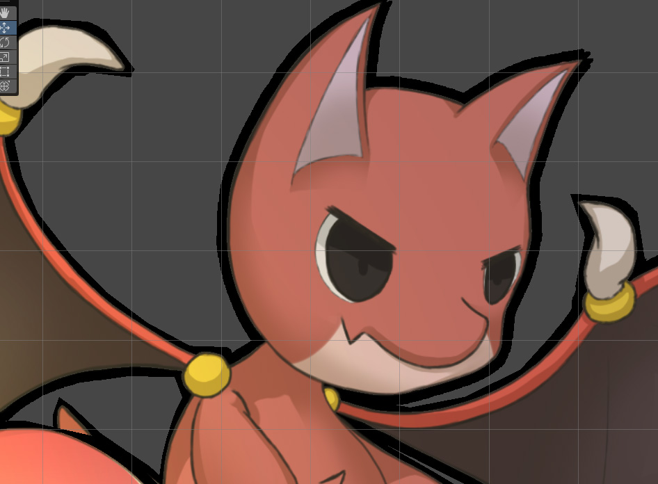
Now you can see the outlines are drawn normally.

This is the result of properly calibrated outlines.
Results according to Outline Material Settings
Outline material has "OutlineColor", "ZBias" properties.
Let's see how this property changes the result.
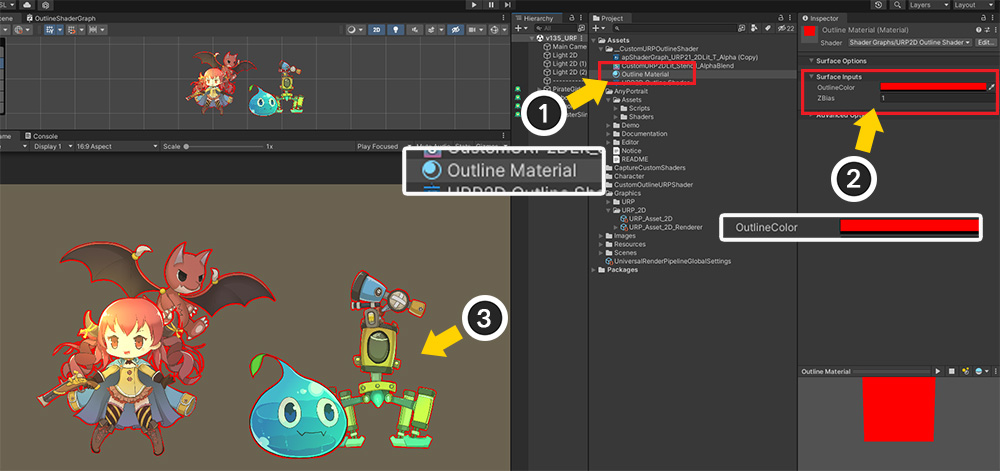
(1) Select Outline Material.
(2) We changed OutlineColor to red.
(3) You can see that the color of the outline changes to red.

Next is the result according to ZBias.
If the ZBias value is too small, the outline will be drawn close to the character's meshes.
In this case, problems also arise between meshes inside the character.
If the ZBias value is too large, the outline will be drawn behind the character meshes a long distance away.
In this case, there is a problem that the outline does not appear between the characters.
You can actually place the characters and set ZBias appropriately.

Outlines are opaque materials that only render based on their Z position.
This property has the advantage of avoiding the problem that the outline is always hidden or always visible when rendered like other meshes.
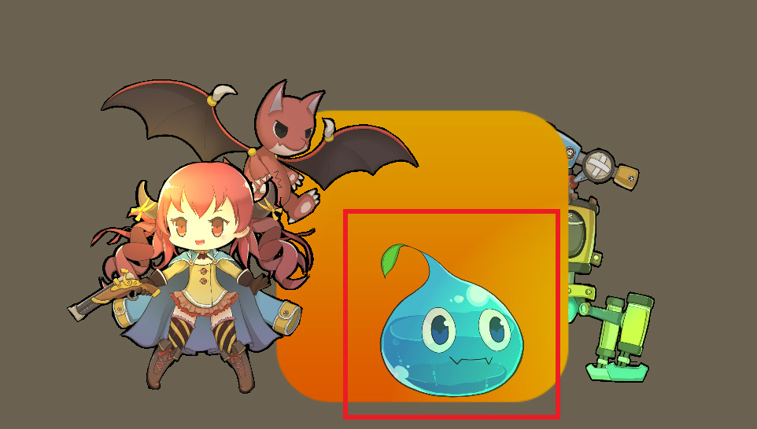
However, if the Z position of another object is very close to the character, there may be a "character visible but no outline" state.
It is recommended to properly specify the Z-position of characters and objects.
Rendering process according to multi-pass rendering
The multi-pass rendering technique has a problem that greatly reduces rendering performance.
However, if the optimization function of SRP, including URP, works properly, the burden can be somewhat reduced.
Let's take a closer look at how rendering is handled.
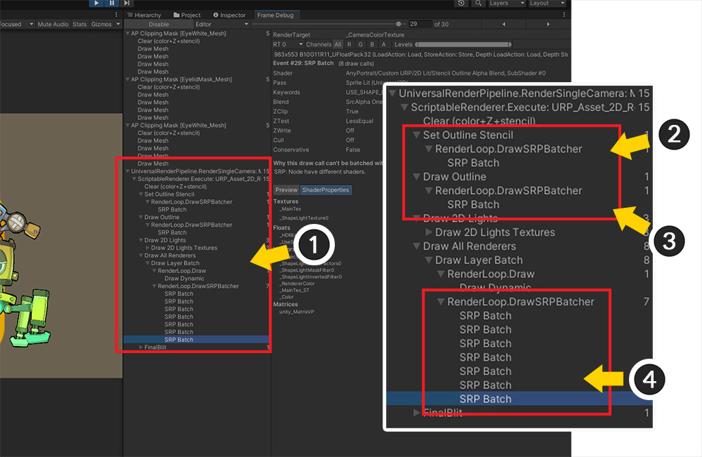
Run Unity's "Frame Debugger".
(1) You can see the rendering process of URP including outline.
(2) This is the process of assigning the value to Stencil. You can see that only one "SRP Batch" was recorded.
(3) This is the process of recognizing the stencil and drawing the outline. Likewise, 1 "SRP Batch" was recorded.
(4) This is the process in which the character meshes are actually drawn.
If "SRP Batcher" works, the stencil setting and outline drawing process is performed by only running "SRP Batch" twice in total.
As the number of times of drawing is not large, if you optimize well, you can see that the burden on rendering performance is not large.
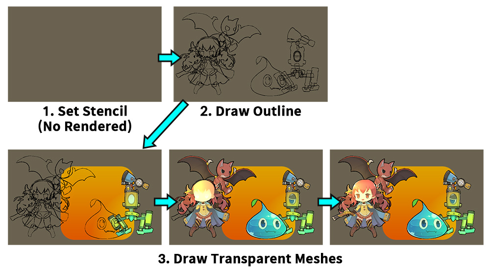
The image above shows the rendering process one by one.
1. In the step of assigning the value to the stencil, there is one rendering process, but nothing is actually drawn.
2. The outlines of all characters are drawn at once.
3. Character rendering is completed after several renderings.